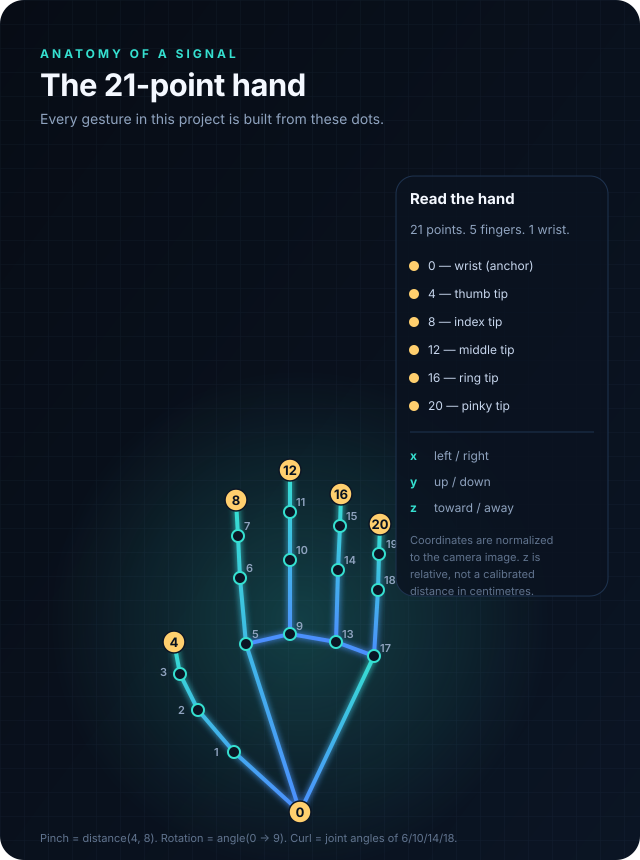

01
The sterile field problem
Touchscreens, mice, and keyboards are contamination surfaces. Every contact creates a decision: change gloves, delegate, or risk it. None of those options is free.
Zero-contact interaction
SurgicalAir turns any webcam into a 21-point hand sensor. Pinch, open, and rotate your hand to control software, 3D scenes, and prototype hardware — without breaking a sterile field.
In a sterile environment, the mouse is the weak link. A surgeon scrubbed and gloved cannot touch a keyboard without breaking protocol. A radiologist mid-procedure cannot scroll a scan without a free hand. A trainee cannot rewind a video without looking away.
Touchscreens, mice, and keyboards are contamination surfaces. Every contact creates a decision: change gloves, delegate, or risk it. None of those options is free.
A surgeon should be thinking about anatomy, not about which button to press. Natural gestures — pinch, open, rotate — reuse motor skills people already have.
Cleanrooms, industrial kitchens, labs, and accessibility contexts all share one constraint: the user cannot or should not touch the computer. The interface should adapt to the human.
Start the camera and the page reads 21 points on your hand in real time. Pinch scales the core, openness expands the particles, and rotation turns the object. No camera? Mouse mode gives you the same signals.
Sterile Flight is a 60-second 3D ring runner. Move to steer the probe, pinch to slow time, and pass through rings. Every ring lights a new node in the Neural Link — a live map of the concepts you are learning. Turn on the Narrator and it speaks each idea aloud.
Every ring is a concept. Every concept is a node.
Each level is a short, plain-language step with one idea, one example, and one thing you can do. Work through them in order and you will understand more than most interview candidates.
A landmark is a named point on your hand. The model returns 21 of them — one wrist, five knuckles, and fifteen finger joints. Think of a connect-the-dots drawing that updates thirty times a second.
The coordinates are normalized to the image: x and y usually run from 0 to 1. z is relative depth, not centimetres.

A gesture is just geometry. The distance between two points is the square root of the squared differences. Divide by the size of the hand and the number works whether your hand is near the lens or across the room.
import math
def distance(a, b):
return math.sqrt((a.x - b.x) ** 2 + (a.y - b.y) ** 2)
def pinch_ratio(hand):
gap = distance(hand.landmark[4], hand.landmark[8])
size = distance(hand.landmark[0], hand.landmark[9])
return gap / max(size, 1e-6)Small ratio means a closed pinch. Large ratio means an open hand. The hand-size division is the trick that makes it robust.
Raw landmarks jitter. A naive threshold flickers. The fix is two numbers instead of one: a lower threshold to start a pinch and a higher threshold to release it. That gap is called hysteresis.
let pinching = false;
function updatePinch(ratio) {
if (!pinching && ratio < 0.30) pinching = true;
else if (pinching && ratio > 0.45) pinching = false;
return pinching;
}
// Exponential smoothing: stable when still, responsive when fast.
const smooth = (prev, next, alpha = 0.72) =>
prev + (next - prev) * (1 - alpha);Hysteresis stops the “maybe” zone from exciting the whole interface. Smoothing stops the cursor from looking drunk.
Every hand-tracking app is the same loop. Read a frame. Detect the hand. Convert landmarks into signals. Decide what the signals mean. Do the action. Repeat.
import cv2
import mediapipe as mp
mp_hands = mp.solutions.hands
cap = cv2.VideoCapture(0)
with mp_hands.Hands(min_detection_confidence=0.8,
min_tracking_confidence=0.5) as hands:
while cap.isOpened():
ok, frame = cap.read()
if not ok:
continue
rgb = cv2.cvtColor(cv2.flip(frame, 1), cv2.COLOR_BGR2RGB)
result = hands.process(rgb)
if result.multi_hand_landmarks:
hand = result.multi_hand_landmarks[0]
# pinch_ratio(hand) → threshold → action
print(pinch_ratio(hand))
cv2.imshow("SurgicalAir", frame)
if cv2.waitKey(5) & 0xFF == ord("q"):
break
cap.release()
cv2.destroyAllWindows()This is the same shape as the scripts in the repository. The browser version swaps OpenCV for a WebAssembly model.
A demo that only works on your laptop is not a product. Production means a fallback for every failure, a privacy story you can defend, and claims you can prove.
No trick questions. Every answer teaches something. Score 8 or higher and you are thinking like someone who could build this — not just use it.
Best score is saved on this device.
The value is not “we have hand tracking.” The value is minutes saved per procedure, fewer glove changes, faster training, and a workflow that does not stop when a hand is busy.
Fewer breaks to touch a mouse. Fewer glove changes. Fewer “can someone click this for me?” moments.
Target buyer: OR leadership, infection preventionTrainees control anatomy models, videos, and simulations with their hands while keeping their eyes on the task.
Target buyer: simulation centres, medical schoolsAn expert’s hand can be captured and replayed as a 21-point overlay — a lightweight, low-bandwidth teaching signal.
Target buyer: telemedicine, rural health networksCleanrooms, labs, kitchens, and accessibility contexts all need control without contact.
Target buyer: industrial operations, accessibility teamsThis is a simple time-value model, not a forecast. Use it to start a conversation with your team — then replace the assumptions with pilot data.
Not a financial promise. Not clinical evidence. Your results depend on workflow, adoption, and validation.
Run the browser lab and Python demos on your own hardware. Confirm latency, camera fit, and workflow assumptions.
Pick one narrow task. Measure time, errors, and user preference against the current process. Publish the result, positive or negative.
If the numbers hold, scope an integration. If they do not, you saved a year and a budget cycle.
The perception layer does not care what the hand is controlling. That is why the same core can drive an image viewer, a game, or a prototype device. Click a layer to see what it does.
The system starts with what you already have: a standard RGB webcam. The optional BLE path reads an IMU sensor for prototyping. Mouse and keyboard are always available as a fallback, so a failed camera never blocks the user.
python/basic_tracking.py · python/ble_device.pyThis project stands on published work in hand tracking, signal smoothing, and touchless operating-room interaction. It does not claim clinical validation of its own.
Real-time hand tracking from a single RGB frame, producing 21 landmarks. The foundation of the browser and Python demos.
Zhang et al., 2020 SIGNAL QUALITYAn adaptive low-pass filter: stable when the hand is still, responsive when it moves fast. The canonical fix for jitter.
Casiez et al., CHI 2012 OPERATING ROOMAHRQ-funded work on a touchless interaction language for the OR, motivated by asepsis and contamination risk.
Wachs et al., AHRQ report USER STUDIESA study of gesture preferences for touchless interaction in the operating room, focused on efficiency and asepsis.
International Journal of HCI, 2022| Claim | Status | Basis |
|---|---|---|
| 21 landmarks can be inferred from RGB | Externally validated | MediaPipe Hands, 2020 |
| Touchless interaction is useful in the OR | Studied | GestureClean; IJHCI 2022 |
| Adaptive smoothing improves pointer feel | Published method | One Euro Filter, CHI 2012 |
| This repository improves surgical outcomes | Not proven | No clinical study of this code |
| Sub-millimetre precision | Not claimed | RGB depth is estimated |
SurgicalAir is a research prototype. It is not a medical device, has not been cleared or certified by any regulator, and must not be used for diagnosis, treatment, or any clinical decision. Any clinical or commercial deployment requires formal risk management, usability engineering, cybersecurity review, privacy compliance, and validation against the intended use. Do not use this code to control a device that can harm a person.
The answers are short on purpose. If something is still unclear, open an issue — the question is probably shared by someone else.
No. It is a research prototype. It has not been cleared or certified by the FDA, CE, or any other regulator, and it must not be used for diagnosis or treatment. The repository is a starting point for research and engineering, not a clinical product.
No. The browser lab processes frames inside the tab using an on-device model. Video is not recorded, uploaded, or sent to a server. The page has no analytics and no account system. The model files are downloaded from a public CDN, but your video stays local.
No, but it helps. The browser tracker prefers the GPU and falls back to the CPU. On older machines, expect lower frame rates. A modern laptop with an integrated GPU is enough for the demo.
Yes. Mouse mode in the Live Lab and the entire Precision Game work without a camera. The 3D scenes, quiz, curriculum, and ROI calculator do not need any hardware.
Accurate enough for interaction prototyping, not for measurement. The landmarks are normalized to the image and the z value is relative depth, not calibrated distance. Gloves, low light, occlusion, and extreme angles all degrade tracking. Validate on your own hardware and workflow.
It is a legacy bridge for a small IMU sensor that streams acceleration, gyroscope, and angle data. It is useful for prototyping sensor fusion. It is not required for the webcam experience and it is not a medical-grade communication layer.
The code is MIT licensed, so you can use, modify, and redistribute it with attribution. Commercial deployment still requires your own validation, regulatory work, and safety analysis. Pilot support and integration work can be discussed through a GitHub issue.
Open an issue with a clear reproduction, or send a small pull request with one change and one verification step. Good first issues are labelled in the repository. Documentation fixes are welcome and count.
Sixty seconds in the Live Lab will tell you more than a deck. Then read the evidence, play the game, and tell us what would make it useful in your world.
Pilots, research collaborations, and integration questions: open an issue on GitHub. We answer in public.